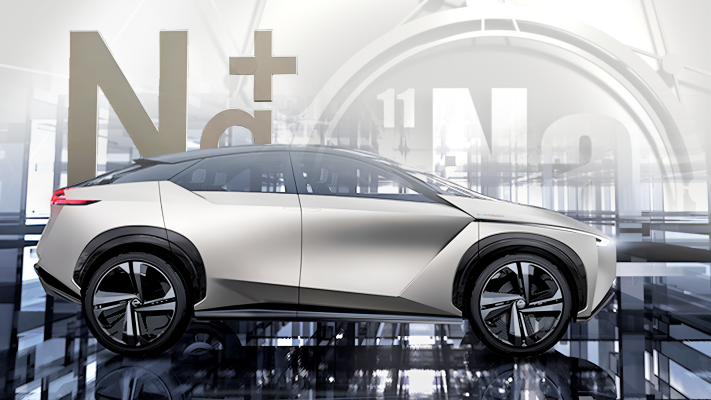
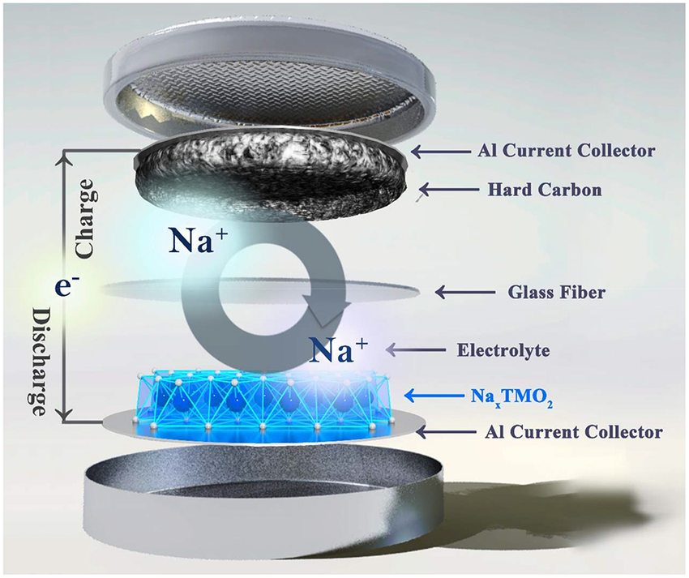
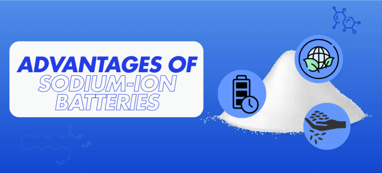
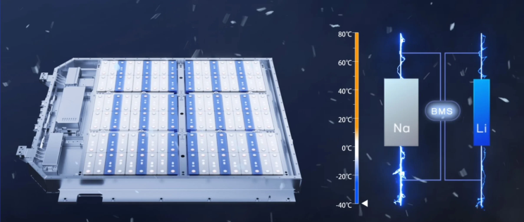
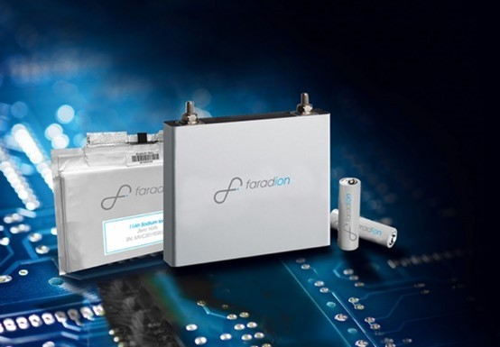
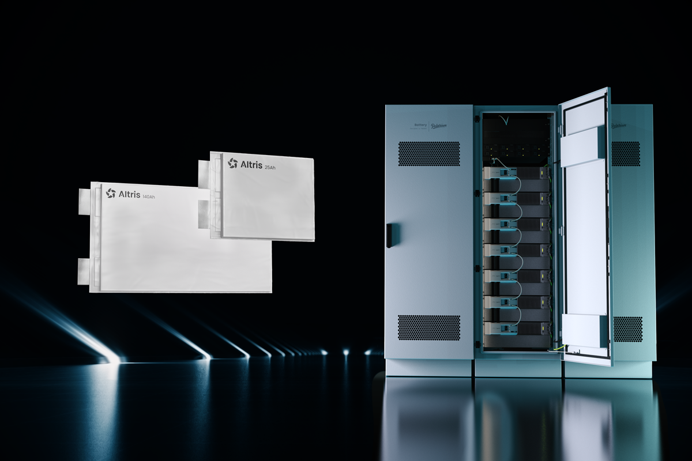
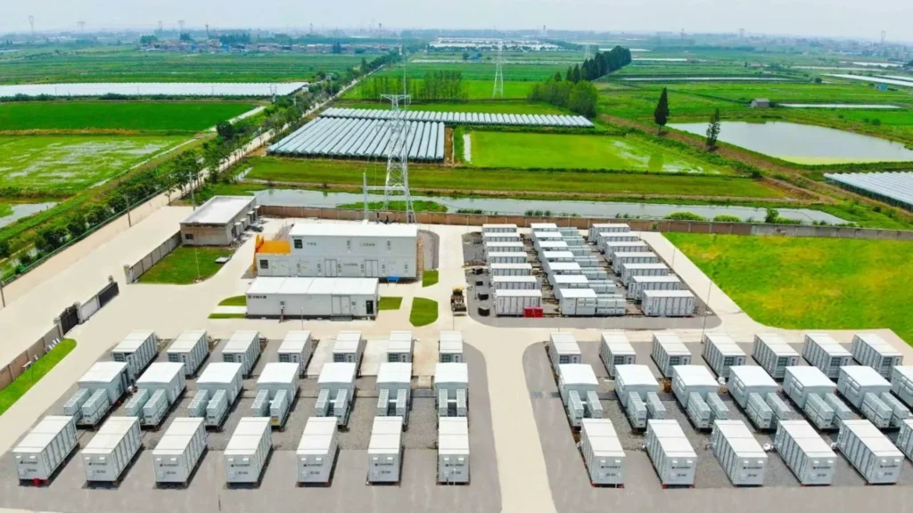
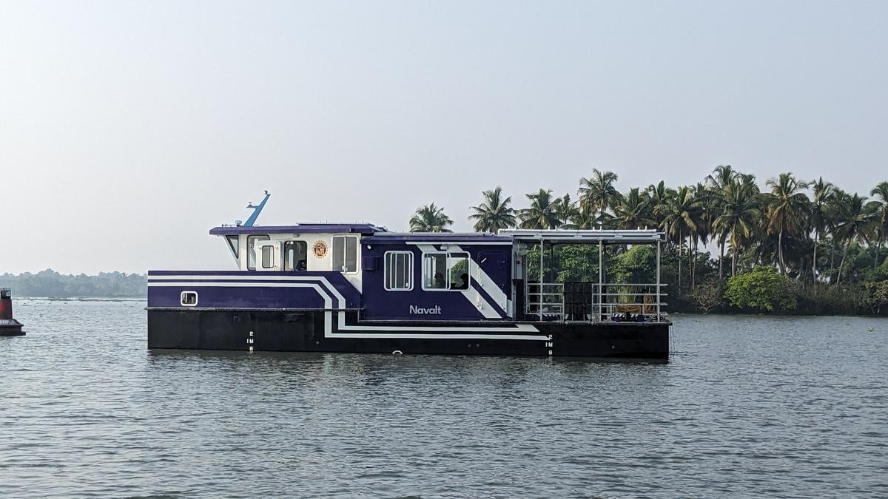

With the rapid shift towards cleaner, sustainable transportation, electric vehicles (EVs) have become a central solution in reducing emissions. While lithium-ion batteries dominate the EV landscape, alternative battery technologies like sodium-ion are emerging with the potential to reshape the industry.
Recent advancements in sodium-ion battery technology are generating excitement about their potential use in electric vehicles (EVs). This newsletter explores the current state of sodium-ion batteries, their advantages and challenges, and their emerging role in the EV market.
Breakthrough Developments
- Rapid Charging Capabilities: Researchers have developed a new hybrid sodium-ion battery that can charge in seconds, significantly faster than traditional lithium-ion batteries. This innovation could revolutionize how EVs are charged, making them more convenient for consumers. The new design combines anode materials from conventional batteries with cathodes derived from supercapacitors, achieving an energy storage capacity of 247 watt-hours per kilogram (Wh/kg) and a power output of up to 34,748 watts per kilogram (W/kg).
- First Production Models: In February 2024, China saw the launch of the first sodium-ion battery-powered EVs. The models produced by Yiwei and JMEV showcase the practical application of this technology, with energy densities ranging from 120 to 160 Wh/kg and a driving range of approximately 251-252 km. These vehicles mark a significant step towards integrating sodium-ion batteries into the mainstream automotive market.

How Sodium-ion Batteries Work
In sodium-ion batteries, sodium ions move back and forth between the anode and cathode through the electrolyte. When the battery is charging, sodium ions flow from the cathode to the anode, where they are stored. During discharge, the ions travel back to the cathode, releasing energy that powers the EV. This process is nearly identical to lithium-ion batteries, but sodium’s higher atomic weight and larger size make the ions less energy-dense than lithium ions.

Advantages of Sodium-ion Batteries
- Abundant Resources: Sodium is far more abundant than lithium, which could lead to lower costs and reduced environmental impact associated with battery production. This shift could alleviate some supply chain concerns tied to lithium mining.
- Long Cycle Life: Initial tests indicate that these new sodium-ion batteries can endure over 5,000 charge cycles without significant degradation, offering longevity comparable to or better than current lithium-ion technologies.
- Environmental Considerations: Sodium-ion batteries do not rely on critical minerals like cobalt and lithium, which are often associated with environmentally damaging mining practices. This makes them a more sustainable option for energy storage.

Challenges Ahead
Despite their promising features, sodium-ion batteries face several hurdles:
- Lower Energy Density: Currently, sodium-ion batteries exhibit lower energy density compared to lithium-ion counterparts. This limitation affects the driving range of EVs, making them less suitable for long-distance travel without frequent recharging. Ongoing research aims to enhance energy density to compete more effectively with lithium-ion technology.
- Performance Limitations: While advancements have been made in charging speeds, sodium-ion batteries still struggle with efficient charging and discharging rates. Improvements in these areas are crucial for consumer acceptance and practical application in EVs.
- Market Maturity: Lithium-ion technology has a significant head start in terms of development and market acceptance. Overcoming this barrier will require sustained investment in research and development to enhance the performance and scalability of sodium-ion battery production.
Real-World Use Cases for Sodium-ion Batteries: Case Studies
1. CATL's Sodium-ion Battery Integration in Electric Bicycles and Micro-Mobility Solutions
CATL (CATL), a global leader in battery manufacturing has recently launched sodium-ion batteries for smaller electric vehicles like e-bikes and scooters. These micro-mobility solutions are an ideal entry point for sodium-ion technology due to their shorter range requirements and lower energy needs compared to passenger EVs.

Key Outcomes: CATL’s sodium-ion batteries have performed well in terms of safety and cost-effectiveness, meeting the demands for frequent, short-distance travel in urban settings. Additionally, the enhanced thermal stability has shown a reduced risk of overheating, making sodium-ion batteries more resilient in dense, hot urban environments where these vehicles are widely used.
2. Faradion’s Solar-Powered EV Charging Station in India
Faradion Limited , a pioneer in sodium-ion battery technology, partnered with Indian solar energy providers to pilot solar-powered EV charging stations using sodium-ion batteries. This initiative aimed to demonstrate the viability of sodium-ion in renewable energy storage while also showcasing its adaptability for EV charging infrastructure.

Key Outcomes: This project has effectively illustrated the environmental benefits of sodium-ion batteries, as they offer a sustainable alternative to lithium-ion with lower dependency on rare materials. The station has performed well in terms of energy storage, showcasing how sodium-ion batteries can store excess solar power and provide consistent energy for EV charging during peak hours, even in India’s high-temperature conditions.
3. Altris AB’s Sodium-ion Battery Deployment in Public Transit Buses in Sweden
A Swedish company Altris AB has been testing sodium-ion batteries in low-speed public buses to explore the technology’s reliability in larger transportation settings. Altris’s batteries were used to power short-distance routes in densely populated urban areas, focusing on consistent performance, lower costs, and sustainability.

Key Outcomes: This pilot has demonstrated that sodium-ion batteries could effectively serve in public transit for short routes where long-range is not essential. Altris AB has reported notable benefits in safety and cost savings, making sodium-ion a potential long-term solution for urban public transport.
4. HiNa Battery’s Utility-Scale Energy Storage Project in China
Chinese company @HiNa Battery has deployed sodium-ion batteries in a utility-scale energy storage project aimed at stabilizing grid energy supplies in an area with high renewable energy use. This project serves as a model for the use of sodium-ion batteries in grid-scale applications.

Key Outcomes: HiNa’s sodium-ion battery storage has shown reliable performance in absorbing and discharging large amounts of energy over extended periods. This case has highlighted sodium-ion’s suitability for high-temperature regions and its reduced environmental footprint, as sodium resources are widely available in China, making the supply chain simpler and more sustainable than lithium alternatives.
5. Sodium-ion Battery Trials in Electric Boats in India
In India, where electric boating is gaining traction as a sustainable alternative in tourism and fishing, sodium-ion batteries have been trialed as a power source for smaller electric boats. These trials have taken place in environmentally sensitive areas, such as Kerala’s backwaters, where the ecological impact of battery waste is a significant concern.

Key Outcomes: The trials showed that sodium-ion batteries performed reliably on short trips, and their enhanced safety and reduced environmental impact make them preferable for ecologically sensitive areas. Sodium-ion’s lower weight and safety advantages also mean fewer restrictions on boat design, making them suitable for expanding eco-tourism operations in India.
Conclusion
In summary, while sodium-ion batteries are not yet a full replacement for lithium-ion in high-performance electric vehicles, they hold substantial promise for future applications. Their advantages in cost, safety, and environmental impact make them an attractive alternative to low-speed or utility EVs. As the technology advances and more R&D investment flows in, sodium-ion batteries could carve out a significant niche in the EV industry.